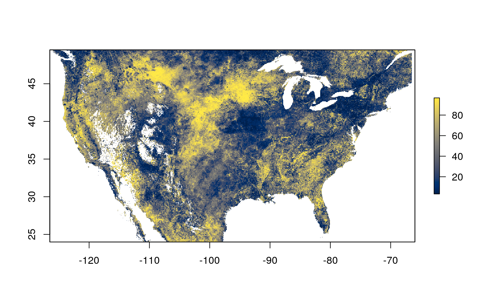
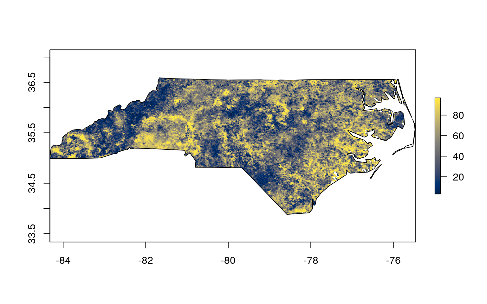

vignettes/leri-roi-tutorial.Rmd
leri-roi-tutorial.RmdThe leri R package provides easy access to the Landscape Evaporative Response Index (LERI) data - an experimental drought monitoring and early warning guidance tool produced by the National Oceanic and Atmospheric Administration.
The LERI product is available from the year 2000 to present at a 1 km spatial resolution over the continental United States, at the following timescales:
More information on the LERI product is available on the NOAA LERI homepage.
This vignette covers a common use case acquiring data over a region of interest defined by a shapefile, masking the LERI data to that region, and saving GeoTIFF files containing data for the region of interest.
By default, the leri package returns data for the continental United States, southern parks of Canada, and northern parts of Mexico. But, you may only be interested in a region of interest, as defined by a shapefile. Here, you will load a shapefile for the state of North Carolina that is distributed by default with the sf package.
library(sf)
#> Linking to GEOS 3.6.2, GDAL 2.2.3, PROJ 4.9.3
library(raster)
#> Loading required package: sp
library(viridis)
#> Loading required package: viridisLite
library(leri)
roi <- st_read(system.file("shape/nc.shp", package="sf"))
#> Reading layer `nc' from data source `/home/max/R/x86_64-pc-linux-gnu-library/3.6/sf/shape/nc.shp' using driver `ESRI Shapefile'
#> Simple feature collection with 100 features and 14 fields
#> geometry type: MULTIPOLYGON
#> dimension: XY
#> bbox: xmin: -84.32385 ymin: 33.88199 xmax: -75.45698 ymax: 36.58965
#> epsg (SRID): 4267
#> proj4string: +proj=longlat +datum=NAD27 +no_defsIf you are using a different shapefile, replace system.file("shape/nc.shp", package="sf") with its file path, e.g., st_read("path/to/file.shp").
The roi object contains multiple columns of data, and a geometry column that contains spatial information on the region of interest, which in this case consists of multiple counties.
roi
#> Simple feature collection with 100 features and 14 fields
#> geometry type: MULTIPOLYGON
#> dimension: XY
#> bbox: xmin: -84.32385 ymin: 33.88199 xmax: -75.45698 ymax: 36.58965
#> epsg (SRID): 4267
#> proj4string: +proj=longlat +datum=NAD27 +no_defs
#> First 10 features:
#> AREA PERIMETER CNTY_ CNTY_ID NAME FIPS FIPSNO CRESS_ID BIR74
#> 1 0.114 1.442 1825 1825 Ashe 37009 37009 5 1091
#> 2 0.061 1.231 1827 1827 Alleghany 37005 37005 3 487
#> 3 0.143 1.630 1828 1828 Surry 37171 37171 86 3188
#> 4 0.070 2.968 1831 1831 Currituck 37053 37053 27 508
#> 5 0.153 2.206 1832 1832 Northampton 37131 37131 66 1421
#> 6 0.097 1.670 1833 1833 Hertford 37091 37091 46 1452
#> 7 0.062 1.547 1834 1834 Camden 37029 37029 15 286
#> 8 0.091 1.284 1835 1835 Gates 37073 37073 37 420
#> 9 0.118 1.421 1836 1836 Warren 37185 37185 93 968
#> 10 0.124 1.428 1837 1837 Stokes 37169 37169 85 1612
#> SID74 NWBIR74 BIR79 SID79 NWBIR79 geometry
#> 1 1 10 1364 0 19 MULTIPOLYGON (((-81.47276 3...
#> 2 0 10 542 3 12 MULTIPOLYGON (((-81.23989 3...
#> 3 5 208 3616 6 260 MULTIPOLYGON (((-80.45634 3...
#> 4 1 123 830 2 145 MULTIPOLYGON (((-76.00897 3...
#> 5 9 1066 1606 3 1197 MULTIPOLYGON (((-77.21767 3...
#> 6 7 954 1838 5 1237 MULTIPOLYGON (((-76.74506 3...
#> 7 0 115 350 2 139 MULTIPOLYGON (((-76.00897 3...
#> 8 0 254 594 2 371 MULTIPOLYGON (((-76.56251 3...
#> 9 4 748 1190 2 844 MULTIPOLYGON (((-78.30876 3...
#> 10 1 160 2038 5 176 MULTIPOLYGON (((-80.02567 3...Because you don’t necessarily care about each county, but rather you want the entire state (including all counties) you can use a spatial union to join data from all counties:
roi <- st_union(roi)
roi
#> Geometry set for 1 feature
#> geometry type: MULTIPOLYGON
#> dimension: XY
#> bbox: xmin: -84.32385 ymin: 33.88199 xmax: -75.45698 ymax: 36.58965
#> epsg (SRID): 4267
#> proj4string: +proj=longlat +datum=NAD27 +no_defs
#> MULTIPOLYGON (((-76.54427 34.58783, -76.55515 3...To acquire LERI data, you can use the get_leri() function. You will fetch the 8 day accumulated timescale data for the week of August 13, 2018:
The leri_raster object is a RasterLayer, and you can see information on the spatial extent, resolution, and coordinate reference system by printing the object:
leri_raster
#> class : RasterLayer
#> dimensions : 2834, 6612, 18738408 (nrow, ncol, ncell)
#> resolution : 0.009, 0.009 (x, y)
#> extent : -126, -66.492, 23.994, 49.5 (xmin, xmax, ymin, ymax)
#> crs : +init=epsg:4326 +proj=longlat +datum=WGS84 +no_defs +ellps=WGS84 +towgs84=0,0,0
#> source : memory
#> names : LERI_8day.ac_Apr01.Aug20_2018.nc
#> values : 3.278688, 96.72131 (min, max)Plot the data with a custom color palette to see what the data look like:

Now you want to subset or mask the LERI data to the region of interest. First, you need to ensure that the raster data and the polygon for the region of interest have the same coordinate reference system.
Now, graphically verify that they align as expected:
Now, you can crop the LERI data to match extents with the region of interest, then mask the raster set all values outside of the region of interest to NA. Because the raster package requires sp objects, rather than sf objects, you will coerce our roi to a sp object first.
roi_sp <- as(roi_reprojected, 'Spatial')
cropped_leri <- crop(leri_raster, roi_sp)
masked_leri <- mask(cropped_leri, roi_sp)You can plot the masked raster along with the ROI to confirm:
